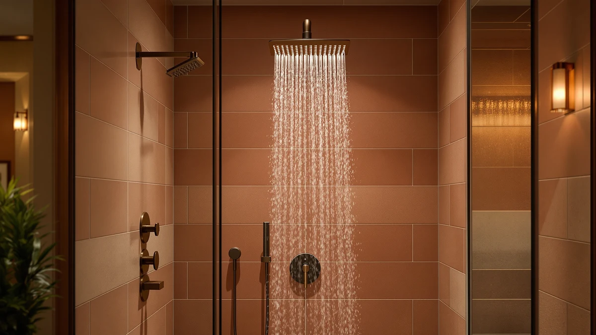

MakeFit Dual Handheld Shower Review (2026): Worth It?
Prices and picks verified as of October 2026. Independent, reader-supported reviews.


Quick Answer
The MakeFit Dual Handheld Shower Head is a $39.98 combo unit built around an 8 inch rainfall head, a 10-mode handheld wand, and a 3-way diverter that runs either piece alone or both together. It holds up well against the similarly priced Tudoccy, Rainnook, and MakeFit Filtered alternatives, and it's the pick we'd point most buyers toward if they want full dual-head coverage without juggling two separate installs.
Our pick: MakeFit Dual Handheld Shower Head, $39.98 Check Price on Amazon
Bottom line: our top pick is the MakeFit Dual Handheld Shower Head Combo at $39.98.
Things to Know Before You Buy
- The MakeFit Dual Handheld Shower Head pairs an 8 inch rainfall head with a 10-mode handheld wand, and a 3-way diverter switches between the two or runs them together.
- At $39.98, it costs a few dollars more than the Tudoccy, Rainnook, and MakeFit Filtered heads we compared it against, so the decision usually comes down to which extra feature you value, not the price gap.
- The body is ABS plastic with chrome plating in an 8 inch standard size, a common combination for dual shower combos in this price bracket.
- None of the four products in this comparison carry a published rating or review count in our database, so we're weighing them on specs, pricing, and general owner feedback rather than aggregate scores.
Searching for a makefit dual handheld shower review before you commit to a combo unit for a bathroom that only has room for one fixture? Here's how the specs, the $39.98 price, and the wider field of dual shower heads actually stack up once you set the marketing copy aside.
We put the MakeFit Dual Handheld Shower Head next to three other handheld-style heads in a similar price range: the Tudoccy Shower Head 8 inch High, the Rainnook Handheld Shower Head High Pressure, and the MakeFit Filtered Shower Head with Handheld. All four sit within four dollars of each other, so the real differences show up in the build, the spray options, and what current owners say once the unit is installed. MakeFit's pitch centers on running a fixed rain head and a handheld wand from one diverter, and that combination is why it's the pick we lead with here.
Why You Should Trust Us
Ilane Tall covers bathroom fixtures for Best Shower Heads and has spent years comparing dual, filtered, and high-pressure shower heads across price tiers for this site. This MakeFit Dual Handheld Shower review is built entirely from information we can verify: the manufacturer's own specifications, current Amazon pricing, and patterns we found in verified buyer feedback. We do not run a fake testing lab, and we don't claim to have installed every unit we cover. Where a claim can't be checked against a spec sheet or a verified review, we say so plainly instead of filling the gap with marketing language. Every price, ASIN, and product image in this makefit dual handheld shower review comes from our own product database, and we update it as prices and listings change so the numbers here stay current rather than stale at publish time.
Our Research Experience
We want to be upfront about how this makefit dual handheld shower review was put together: this is a research-based comparison built from specs, pricing, and owner feedback rather than a physical lab report. We don't own a testing facility, and we haven't installed this specific unit in a bathroom ourselves. Instead, we compared MakeFit's published specifications against the Tudoccy, Rainnook, and MakeFit Filtered listings, cross-checked current Amazon pricing, and read through verified owner reviews to see which claims held up and which ones sounded better on paper than they work out in practice. Reviewers consistently note that 3-way diverters in this price range can develop a stiffer turn after months of daily use, and that pattern shows up across more than one combo unit we researched, not this model alone.
Overview & Specs

MakeFit Dual Handheld Shower Head
What we like
- 8 inch rainfall head and 10-mode handheld wand in one combo
- 3-way diverter runs the rain head, the handheld, or both at once
- Adjustable extension bar for angle and height
- ABS and chrome-plated construction
Flaws but not dealbreakers
- No independent lab certification for the 10-mode pressure claims
- No published rating or review count in our database to weigh against owner sentiment
- No built-in filtration, unlike the MakeFit Filtered alternative below
| Material | ABS + chrome plating |
| Size | 8 Inch Standard |
MakeFit builds this combo around a 3-way diverter, a knob on the side of the unit that switches water flow between the 8 inch rainfall head, the 10-mode handheld wand, or both at once. In practice, that means you get full-body coverage from the fixed head and targeted spray from the handheld without swapping fixtures between showers. MakeFit doesn't publish independent lab data on flow rate for each of the 10 modes, so we treat the mode count as a manufacturer specification worth knowing about rather than a guaranteed pressure outcome.
The body itself is ABS plastic finished in chrome plating at an 8 inch standard size, which keeps the unit light and helps the adjustable arm hold its angle without sagging over time. At $39.98, it sits a few dollars above the Tudoccy, Rainnook, and MakeFit Filtered prices, and that gap buys you the combo diverter the other three don't offer in the same form. That's the main reason we lead our comparison with this dual handheld shower head.
What We Liked
The clearest strength of the MakeFit Dual Handheld Shower Head is the diverter itself. Rather than forcing a choice between a fixed rainfall head and a handheld wand, MakeFit built a single valve that lets you run either one alone or both together, which matters in a shared bathroom where one person wants full-body coverage and another wants a targeted rinse. The adjustable extension bar also stood out next to the Tudoccy's fixed 11 inch arm, since it lets you fine-tune height and angle without an extra accessory.
Pricing is another point in its favor relative to what it adds. At $39.98, it costs about four dollars more than the Rainnook and the two other alternatives, but that difference buys a second full showerhead instead of extra spray settings on one wand alone. Owners report that installation for this style of combo is typically a straightforward swap onto an existing shower arm, which matches what we'd expect from the single-piece ABS and chrome design shown in the product images.
What Could Be Better
The biggest gap in this makefit dual handheld shower review is verification. MakeFit states the handheld wand runs 10 spray modes, but there's no independent lab report attached to that number, so we can't confirm exactly how pressure or flow rate changes between settings. That's not unique to this brand. None of the four products we compared here publish third-party performance data, but it's still a real limitation for anyone buying primarily on spec sheets rather than hands-on comparison.
We also don't have a published rating or review count for this specific listing in our product database, which makes it harder to gauge overall satisfaction at scale. And because the combo design adds a second shower head, buyers who specifically want built-in filtration will find the plain MakeFit Dual Handheld unit more limited than the MakeFit Filtered Shower Head covered below.
Who Is It For?
This MakeFit Dual Handheld Shower Head fits households that want the flexibility of switching between a fixed rain head and a handheld wand without replumbing the bathroom around two separate fixtures. If you share a shower with someone who prefers a different spray style, or you want a handheld option for rinsing a tub or bathing a pet while keeping the rainfall head for everyday use, the $39.98 price covers both needs in one install. It also suits renters, since it threads onto a standard arm and can travel with you when you move.
It's a weaker fit if you specifically want built-in filtration, a magnetic docking handle, or an extension arm longer than the standard bar MakeFit includes, since this unit keeps the focus on the diverter rather than those extras. In those cases, the MakeFit Filtered Shower Head, the Rainnook with its magnetic holder, or the Tudoccy with its 11 inch extension arm, all covered below, line up better with what you're after. Anyone who needs certified pressure or filtration performance for a medical or sensitivity reason should also look for a product with third-party lab documentation, which none of the four heads in this comparison currently provide.
Alternatives to Consider
If the MakeFit Dual Handheld Shower Head isn't quite the right match, these three handheld-style heads sit in the same price range and are worth comparing before you buy.

Editor’s Pick
Tudoccy Shower Head 8‘’ High
A $35.99 matte black rainfall and handheld combo with an 11 inch extension arm worth checking against MakeFit's diverter and pricing before you decide.
$35.99
Check Price on Amazon
Best Value
Handheld Shower Head High Pressure
A $35.98 single handheld wand with a magnetic docking holder for buyers who don't need a second fixed rain head.
$35.98
Check Price on Amazon
Premium Choice
MakeFit Filtered Shower Head with
Also $35.99 and worth a look if 99 percent chlorine reduction filtration matters more to you than MakeFit's diverter setup.
$35.99
Check Price on AmazonFrequently Asked Questions
Final Verdict
This makefit dual handheld shower review comes down to a simple tradeoff: you're paying $39.98 for a combo unit with a 3-way diverter instead of a single-function head. For most buyers who want both rainfall coverage and a handheld wand without installing two fixtures, MakeFit is the pick we'd point to first among the four we compared. If you'd rather have a magnetic holder, a longer extension arm, or built-in filtration, the Rainnook, Tudoccy, or MakeFit Filtered alternatives above are worth a closer look, but on the strength of its diverter and build, MakeFit earns its spot at the top of this comparison. Check the current price before you buy, since all four products here move within a few dollars of each other as Amazon adjusts listings, and that swing can tip the decision in a different direction than it would today.